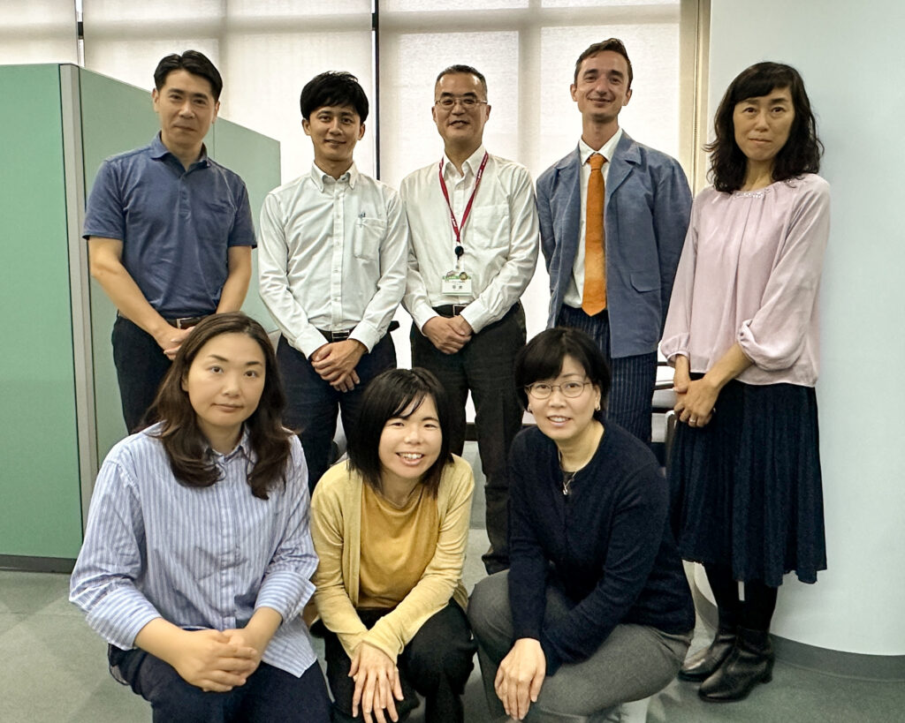
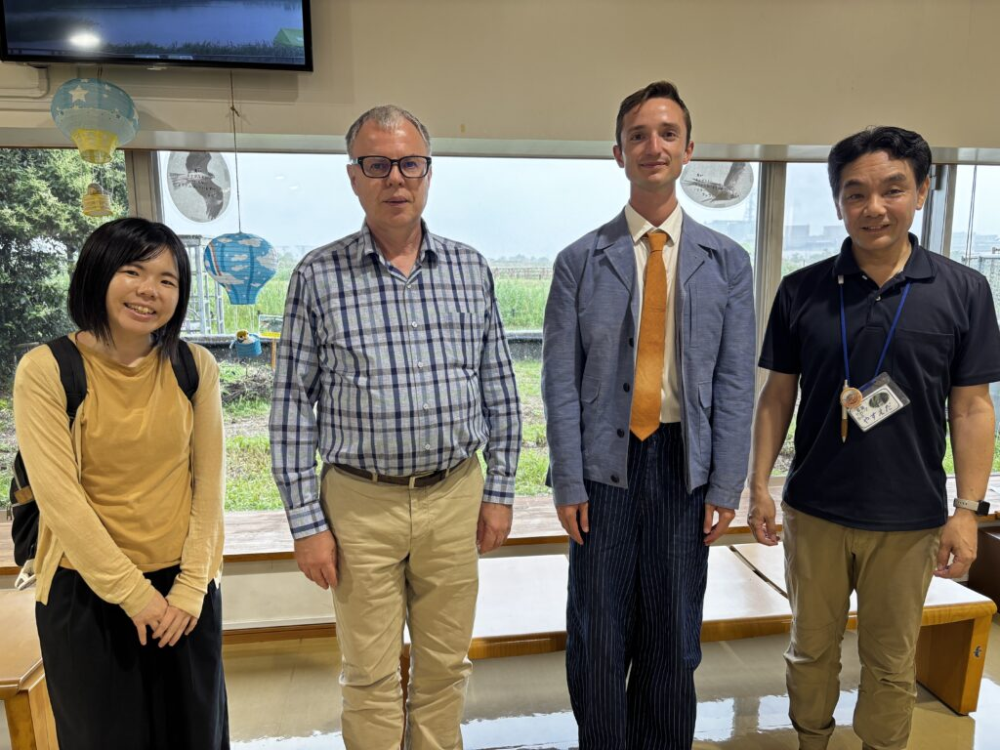

このたび、元ICLEI Europe職員で、現在は自然を活かした解決策（Nature-based Solutions：NbS）の研究に取り組むSimon Racé（シモン・ラセ）氏が北九州市を訪問し、IGES（北九州ネイチャーポジティブネットワーク事務局）、北九州市環境局ネイチャーポジティブ推進課との意見交換を行いました。
Simon氏は、ヨーロッパとアジア各国の先進的なNbS事例について20か国を訪問・調査し、その成果を世界へ発信するプロジェクトを進めています。今回の意見交換では、北九州市から「北九州市生物多様性戦略2025-2030」に基づく取組を紹介するとともに、都市における生物多様性保全やネイチャーポジティブの実現に向けた施策について活発な議論が行われました。
その後、Simon氏は響灘ビオトープを訪問し、安枝園長や北九州市立大学のバート教授から、響灘ビオトープの管理・運営や、生物多様性保全の取組について説明を受けました。また、NPO法人北九州ビオトープ・ネットワーク研究会による放置竹林の整備活動や、企業・行政・市民が連携して進める地域の自然再生活動についても紹介を受けました。
視察後、Simon氏は次のように感想を述べました。
「これまでNbSを研究してきましたが、企業がこれほど積極的に連携している事例は初めて見ました。日本、とりわけ北九州市の取組は非常に進んでいると感じます。」
と感想を述べ、地域の多様な主体が連携して自然環境の保全と地域づくりを進めている点に大きな関心を示しました。
今回の交流は、北九州市のネイチャーポジティブの取組が国際的にも注目される可能性を再確認する機会となりました。今後も国内外のネットワークと連携しながら、自然と人が共生するまちづくりを進めていきます。

IGES・北九州市ネイチャーポジティブ推進課との意見交換（Simon氏は上段右から2番目）

響灘ビオトープでの安枝園長とバート教授との意見交換